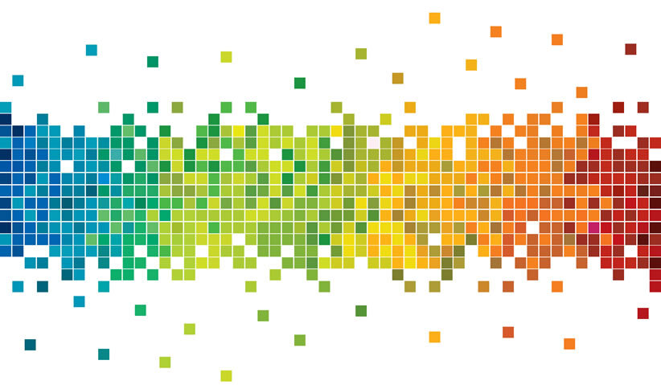

Трите веб дизајн филозофии
- Естетика
- -Колку се професионални изгледот и
смислата на сајтот; дали се во сооднос со
идентитетот на компанијата или
индивидуата?
- Корисност
- -Колку лесно и брзо може корисникот да ја
најде и процесира потребната информација?
- Функционалност
- -Програмскиот дел треба да овозможи
функционалност на страната-добра форма и
достапност до базата на податоци.
